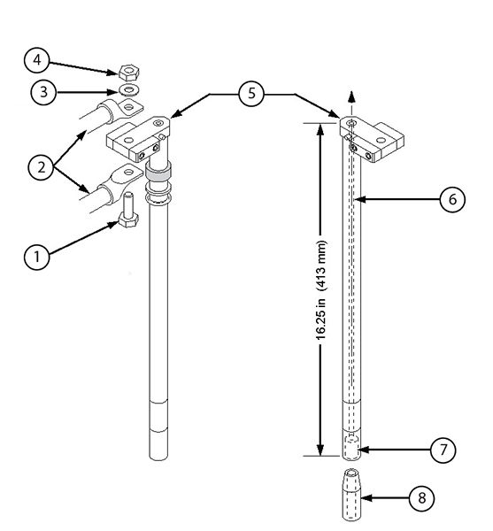
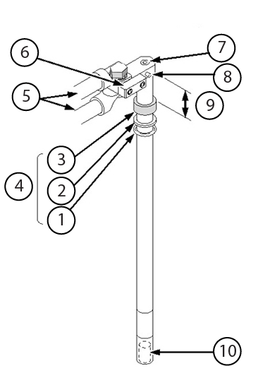

Set: Nonabsorbent Protective Clothing (long sleeve shirt and pants)
1 per person
-
-
Service Platform with Side Shield Protection
1
5155291 (or equivalent)
-
Required conditions
The pre-ramp grounding circuit must be complete, and the main lead extensions grounded, before you insert or extract any main lead extensions from the magnet.
Procedure
Connect the other end of the main power cables to the main lead extensions and secure them with the 25.4 mm (1 inch) brass bolts, washers, and nuts, as shown below.
Figure 1. Hardware mounting on fixed main lead extensions

Item
Description
Item
Description
1
Brass bolt
5
Main lead extensions
2
Main power lead cables
6
Flow path
3
Brass washer
7
Contact band (pin interface area)
4
Brass nut
8
Ramp pin (center is open for helium flow)
Make sure the connections are sufficiently tightened.
Make sure that the gas flow holes in the main lead extension are not blocked.
Remove the positive (+) ramp port cap located on the magnet's vertical stack. Make sure the O-ring inside the cap does not get lost.
Figure 2. Ramp and fill ports
Do not excessively rotate the main lead extension after it is in the engaged position.
Make sure that helium gas is exiting the gas flow holes in the main lead extension.
Hand-tighten the compression nut onto the ramp lead port until no gas leaks except from the vent hole.
While pressing down on the top of the lead, rotate it back and forth (about 15° in each direction from the initial position), raise it 0.5 inches up, re-engage it, and rotate again.
Connect one end of the voltage sense lead to the positive main lead extension's voltage sense screw lug, directing the screw toward the edge of the service turret.
Connect the other end of the voltage sense lead to a digital voltmeter (DVM) placed near the main coil power supply.
Figure 3. Fixed main lead extension

Item
Description
Item
Description
1
O-ring
6
Copper connecting blocks
2
Washer
7
Helium gas flow hole
3
Compression nut
8
Voltage sense screw lug
4
Compression fitting
9
Elevation above the nut
5
Main power lead cables
10
Contact bands (pin interface area)
Repeat Step 4 through Step 10 with the negative main lead extension and negative (-) ramp port.